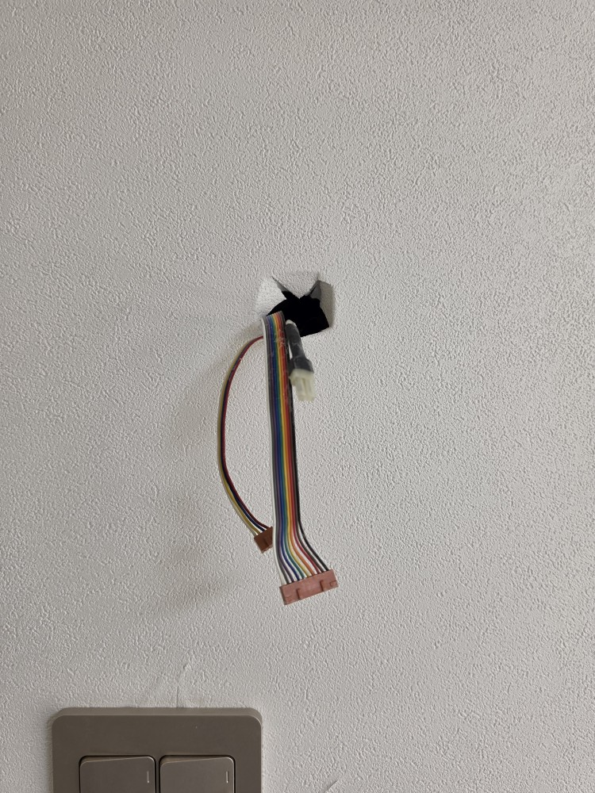

1단계 · 교체 전
1단계 · 교체 전
기존 구형 비디오폰 상태 및 배선 확인
중랑구 망우동 현장의 기존 비디오폰·인터폰 모델과 배선 라인을 확인하고 화면·음성·문열림 신호 상태를 점검합니다.
중랑구 망우동 비디오폰 교체가 필요한 아파트·빌라·세대 현장을 위해 기존 배선 규격에 맞춘 호환 교체와 1층 공동현관·거실 월패드·현관 도어락 무선 문열림 연동을 진행합니다. 구형 기기 철거 후 남은 타공 흔적도 전용 마감판으로 깔끔하게 정리해 드립니다.
중랑구 망우동 일대는 단지 준공 연도와 세대 배선(아날로그·디지털·로비폰 통신 방식)에 따라 호환 기종이 달라집니다.
1. 구형 기기 철거 및 호환 모델 교체: 오래되어 화면이 흐리거나 통화·벨소리가 끊기는 구형 비디오폰·인터폰을 철거하고, 망우동 현장 세대 배선에 맞는 호환 기종(코맥스 480 시리즈 호환 기종, 코맥스 77MG 등)으로 교체합니다.
2. 매립 타공 전용 마감판 시공: 기존 대형 매립박스를 떼어낸 뒤 생기는 빈틈이나 벽면 자국은 전용 마감판으로 덮어 깔끔하게 마무리합니다.
3. 공동현관 로비폰 및 현관 도어락 연동: 1층 공동현관 호출·문열림 작동과 현관 디지털 도어락 무선 문열림 연동을 점검해 세팅합니다.
기존 기기 점검부터 마감판 고정, 신형 비디오폰 설치, 도어락 문열림 연동까지 순서대로 진행합니다.
1단계 · 교체 전
중랑구 망우동 현장의 기존 비디오폰·인터폰 모델과 배선 라인을 확인하고 화면·음성·문열림 신호 상태를 점검합니다.

2단계 · 배선·마감판기존 선로를 신형 규격에 맞춰 정리하고, 매립 부위 주변을 전용 마감판으로 고정해 깔끔한 설치 면을 만듭니다.
 3단계 · 교체 완료
3단계 · 교체 완료
중랑구 망우동 현장에 신형 비디오폰을 장착한 뒤 현관 카메라 화면, 음성 통화, 공동현관 호출 및 개방 동작을 확인합니다.
 4단계 · 도어락 연동
4단계 · 도어락 연동
거실 비디오폰에서 현관 도어락을 열 수 있도록 무선 연동 모듈을 세팅하고 실제 개폐 작동을 마무리합니다.
중랑구 망우동 비디오폰 교체 및 도어락 연동 문의 시 가장 많이 물어보시는 내용입니다.
현재 설치된 구형 비디오폰(또는 인터폰) 사진 1장과 현관 도어락 모델 사진 1장을 문자로 보내주시면 호환 가능 여부와 출장비 포함 견적을 안내해 드립니다.
기존 매립형 기기 자리는 현장 크기에 맞는 전용 마감판으로 덮어 시공하므로 노출 흔적을 최소화할 수 있습니다.
네, 중랑구 망우동을 비롯해 면목동·상봉동 등 인근 지역도 세대 배선과 로비폰 방식에 맞춰 동일하게 교체 및 연동을 진행합니다.